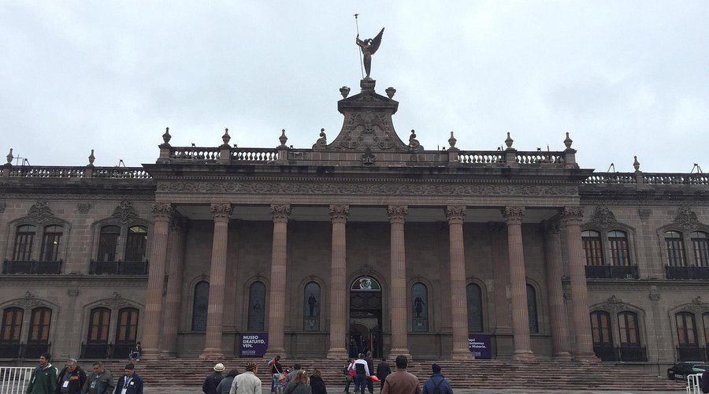
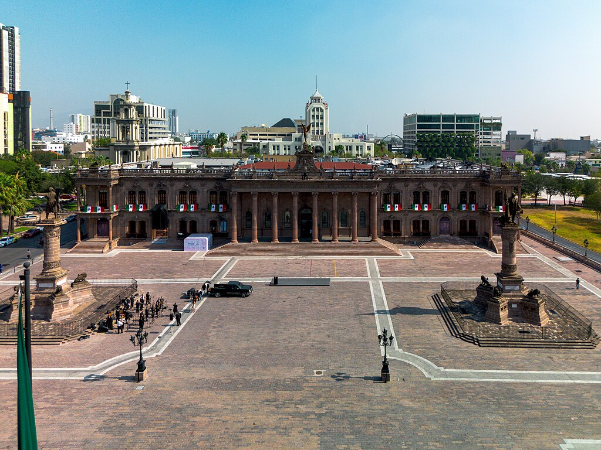
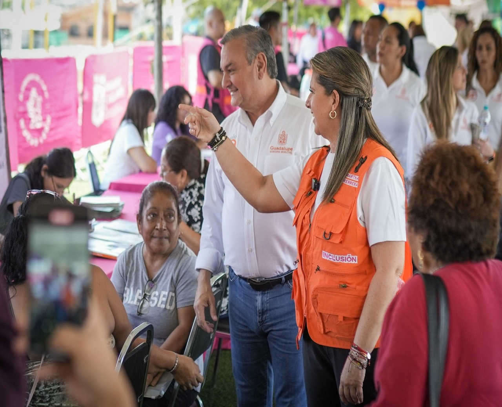
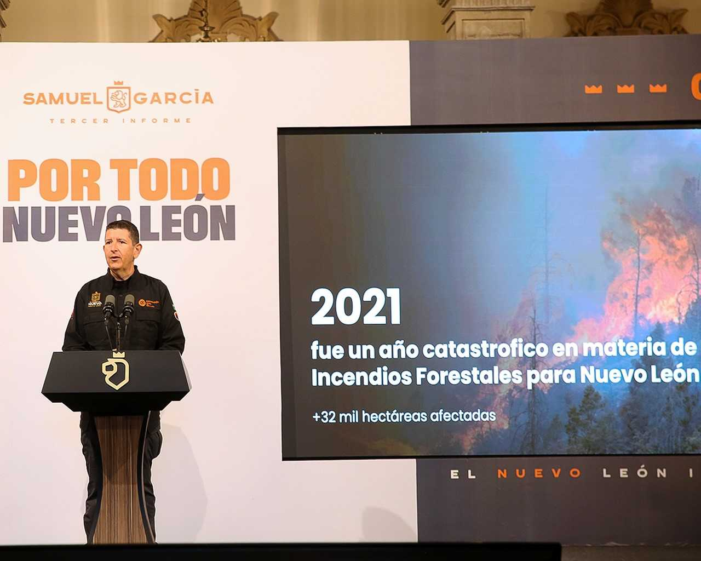

Palacio Municipal de Monterrey
Una imponente estructura de acero y hormigón que domina el extremo sur de la Macroplaza, el moderno Palacio Municipal (Ayuntamiento) contrasta con la ornamentada Catedral Metropolitana y el clásico Palacio Municipal Antiguo cercano. Ver en Google Maps.

Museo del Palacio de Gobierno
Un sitio histórico que preside la vida de los nuevoleoneses y donde es posible reflexionar acerca de los diversos procesos que forjaron a la actual sociedad de este estado. Ver en Google Maps.

Al encabezar un recorrido por la estación que la dependencia estatal llevó a la Colonia Cañada Blanca, en Guadalupe, la Secretaria Martha Herrera mencionó que la oferta de trámites, programas y servicios de la “Nueva Ruta” han llegado a todo Nuevo León. Leer más.

Destaca Director de Protección Civil que esta es la primera administración en tener una Unidad Especializada de Incendios Forestales. Leer más.